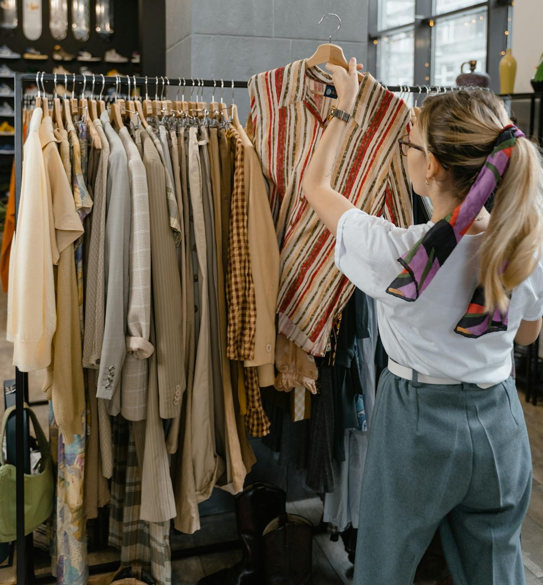

Sustainability
At the heart of our shop is a simple belief: clothes deserve more than one life. By choosing second hand, you're helping to reduce waste, conserve resources, and slow down the demand for fast fashion.
The fashion industry is one of the largest contributors to landfill and pollution worldwide. Every year, tonnes of perfectly wearable clothing are thrown away. Shopping pre-loved keeps quality items in circulation for longer, reducing the need for new production and the water, energy, and raw materials that come with it.
We carefully select the items we sell to ensure they're in great condition and ready for their next chapter. By giving clothes a second chance, we help cut down on textile waste while offering affordable, unique pieces you won't find on the high street.
Sustainability isn't about being perfect — it's about making better choices where we can. Whether you're buying, donating, or simply choosing to shop more thoughtfully, you're playing a part in creating a more responsible and circular fashion future.
Thank you for supporting a small shop with a big commitment to making fashion kinder to the planet.
